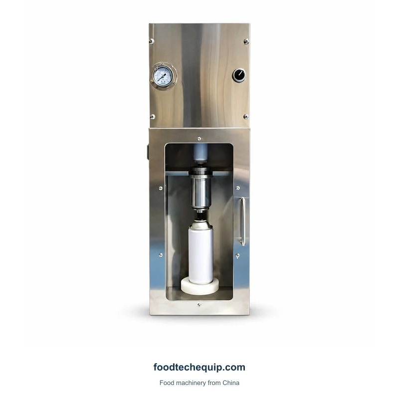

Thiết bị nạp sơn vào bình xịt
Máy chiết rót sơn khí dung bằng khí nén
Máy chiết rót sơn khí dung bằng khí nén có bình cấp sơn và giá đỡ lon.
Xem thiết bịSo sánh máy nạp sơn xịt theo công thức, kiểu bình và công đoạn sử dụng.
Máy chiết rót sơn khí dung bằng khí nén có bình cấp sơn và giá đỡ lon.
Xem thiết bị
Một đơn vị đổ sơn aerosol kín với áp suất đo và tiếp cận phía trước.
Xem thiết bị
Thiết bị đổ sơn aerosol với một bàn tròn và khung hỗ trợ.
Xem thiết bịThử một từ khóa khác hoặc xoá bộ lọc.
Cho biết thông tin an toàn sơn, định dạng chai và van và thao tác đổ đầy cần thiết. Bao gồm các yêu cầu về vùng nguy hiểm và áp suất từ đánh giá địa điểm.
Quá trình aerosol có thể liên quan đến chất dễ cháy và nguy cơ áp suất. Có nhân viên có năng lực đánh giá công thức, quy trình và yêu cầu của trang web trước khi chọn thiết bị.
| Vùng chọn | Tiêu chí so sánh | Để tôi cung cấp gì? |
|---|---|---|
| Giai đoạn tiến trình | Đổ đầy sản phẩm so với các hoạt động aerosol khác | Vùng làm việc và thông tin công thức |
| Hộp chứa | Định dạng van và hộp đựng tương ứng | Lắp ráp đầy đủ |
| Trang | Áp suất và yêu cầu liên quan đến vật liệu | Đánh giá bởi nhân viên có năng lực |
Lập yêu cầu cho quy trình sơn khí dung riêng với chiết rót thực phẩm. Cùng nhân sự có chuyên môn xác định công đoạn cần thực hiện, tổ hợp lon và van, và yêu cầu đánh giá nơi lắp đặt.